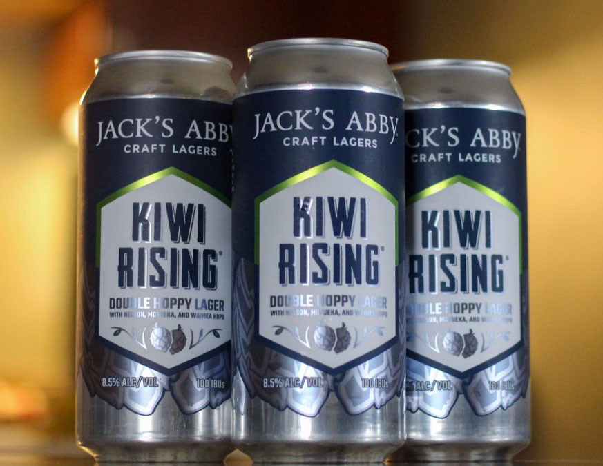

HOME
LAGER
Kiwi Rising
Jack's Abby Craft Lagers
This is an intense Double Hoppy Lager is dry hopped to infuse an intense floral and citrusy aroma and flavor. Kiwi Rising has over four pounds of New Zealand hops per barrel making it one of our hoppiest offerings. No kiwifruit or kiwi birds were harmed in the production of this beer.
Founded in 2011 by three brothers, Jack, Eric, and Sam Hendler, Jack’s Abby has become a mainstay of the craft brewing scene in the Northeast and nationwide. Located in Framingham, MA.
Check out their site HERE 